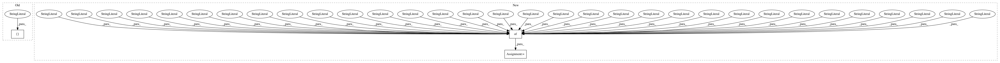

e1dfbc5eb32bd8c64a4325c594e202c918e9adc3,python/vmaf/core/vmafrc_feature_extractor.py,FloatAdmFeatureExtractor,FloatAdmFeatureExtractor_1,#,136
Before Change
TYPE = "float_ADM_feature"
VERSION = "1.0"
ATOM_FEATURES = ["adm2",
]
ATOM_FEATURES_TO_VMAFRC_KEY_DICT = {
"adm2": "adm2",
}
After Change
"adm_den_scale3",
]
ATOM_FEATURES_TO_VMAFRC_KEY_DICT = {
"adm2": "adm2",
"adm_scale0": "adm_scale0",
"adm_scale1": "adm_scale1",
"adm_scale2": "adm_scale2",
"adm_scale3": "adm_scale3",
"adm": "adm",
"adm_num": "adm_num",
"adm_den": "adm_den",
"adm_num_scale0": "adm_num_scale0",
"adm_den_scale0": "adm_den_scale0",
"adm_num_scale1": "adm_num_scale1",
"adm_den_scale1": "adm_den_scale1",
"adm_num_scale2": "adm_num_scale2",
"adm_den_scale2": "adm_den_scale2",
"adm_num_scale3": "adm_num_scale3",
"adm_den_scale3": "adm_den_scale3",
}
def _generate_result(self, asset):
// routine to call the command-line executable and generate quality
// scores in the log file.
In pattern: SUPERPATTERN
Frequency: 3
Non-data size: 3
Instances
Project Name: Netflix/vmaf
Commit Name: e1dfbc5eb32bd8c64a4325c594e202c918e9adc3
Time: 2020-11-19
Author: zli@netflix.com
File Name: python/vmaf/core/vmafrc_feature_extractor.py
Class Name: FloatAdmFeatureExtractor
Method Name: FloatAdmFeatureExtractor_1
Project Name: Netflix/vmaf
Commit Name: e1dfbc5eb32bd8c64a4325c594e202c918e9adc3
Time: 2020-11-19
Author: zli@netflix.com
File Name: python/vmaf/core/vmafrc_feature_extractor.py
Class Name: IntegerAdmFeatureExtractor
Method Name: IntegerAdmFeatureExtractor_1
Project Name: Netflix/vmaf
Commit Name: 77f6a12cda2854de800766fd2e40bb12f2495592
Time: 2020-06-22
Author: zli@netflix.com
File Name: python/vmaf/core/feature_extractor.py
Class Name: MsSsimFeatureExtractor
Method Name: MsSsimFeatureExtractor_1